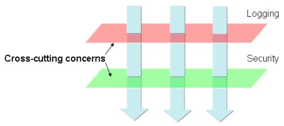
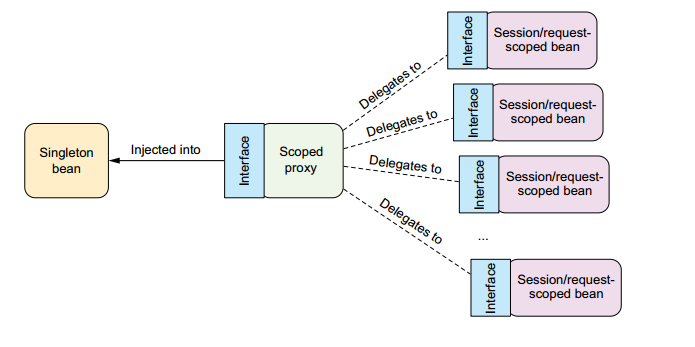

How Java Tools Work
Aspect Oriented Programming
What Problem Does This Solve?
Aspect Oriented Programming
is about cross cutting concerns
Never Used It?
Terms
- Join Point
- Pointcut
- Advice
- Weaving
Join Points
Addressable units of code
public class Main { // Class Definition
public static void main // Method Definition
(String[] args) { // Argument Definition
System.out // Field Access
.println // Method Invocation
(args[0]) // Variable Reference
}
}Pointcuts

Identify the Join Points of interest
Advice
The way to change the Join Points
Weaving
The application of Advice to Join Points
Spring Aspect Oriented Programming
It's weak
That's ok
Pointcut Definition
@Pointcut("execution(* transfer(..))") // the pointcut expression
private void anyOldTransfer() {} // the pointcut signatureCombining Pointcuts
@Pointcut("execution(public * *(..))")
private void anyPublicOperation() {}
@Pointcut("within(com.xyz.someapp.trading..*)")
private void inTrading() {}
@Pointcut("anyPublicOperation() && inTrading()")
private void tradingOperation() {}Referencing Pointcuts
package a.b.c;
@Aspect
class PointcutCollection {
@Pointcut("execution(* transfer(..))")
private void anyOldTransfer() {}
}You can then reference this as a.b.c.PointcutCollection.anyOldTransfer()
Spring Advice
Can only be applied to methods
Advice Types
- Before Calling
- After Returning
- After Throwing
- Surrounding or Replacing
Advice Definition
@Aspect
public class AfterReturningExample {
@AfterReturning(
pointcut="a.b.c.Pointcuts.dataAccessOperation()",
returning="value")
public void doAccessCheck(Object value) {
// ...
}
}Limited
Implementation Details
Dynamic Proxies
@Before(pointcut="execution(public * speak(..))")
public void sayHello() {
System.out.println("Hello, World!");
}
@Controller
public class Cat {
public void speak() {
System.out.println("meow");
}
}Becomes
public class ProxyCat extends Cat {
private Cat proxy;
public void speak() {
System.out.println("Hello, World!");
proxy.speak();
}
}